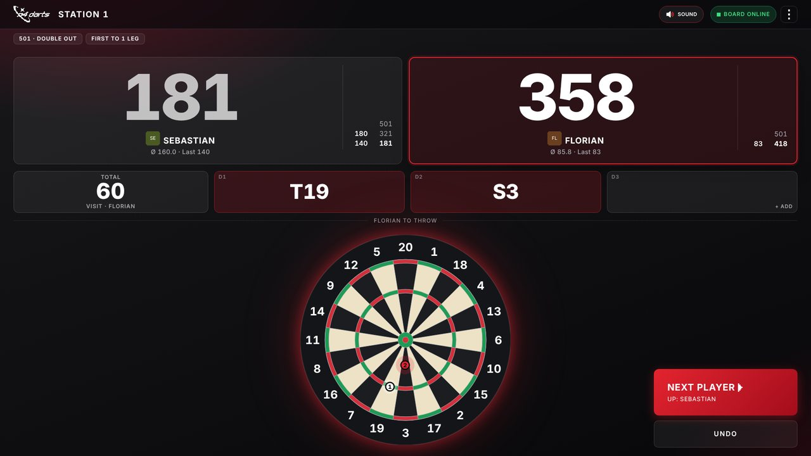
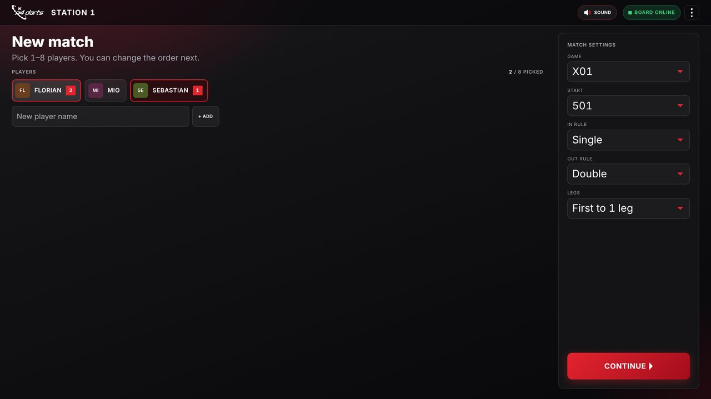
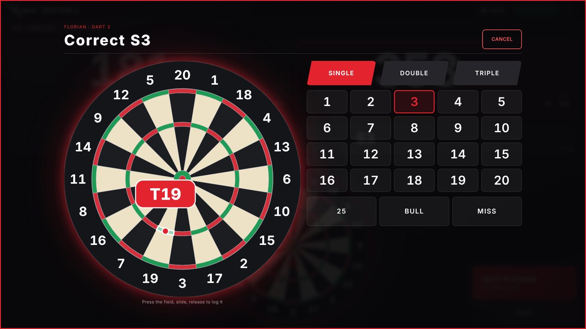
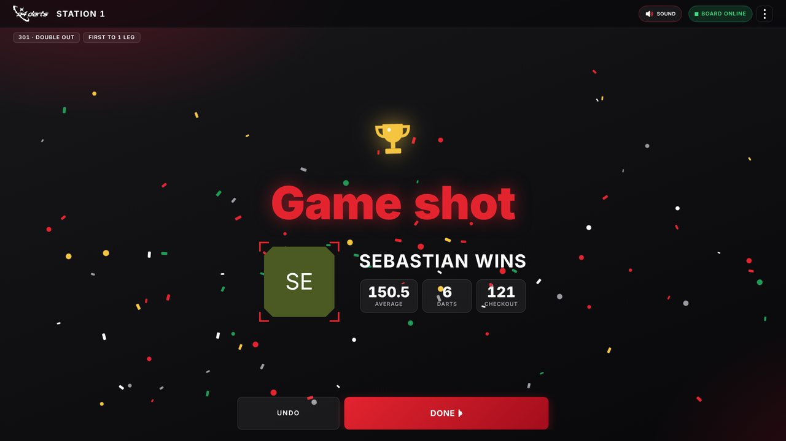
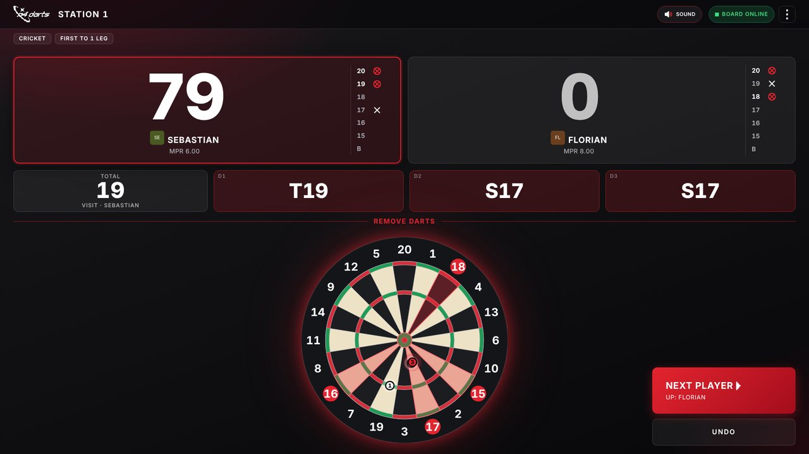
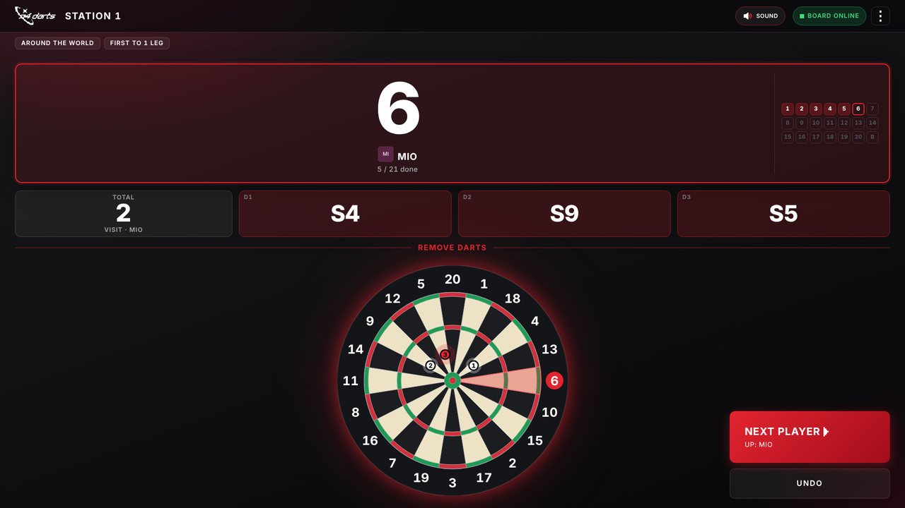
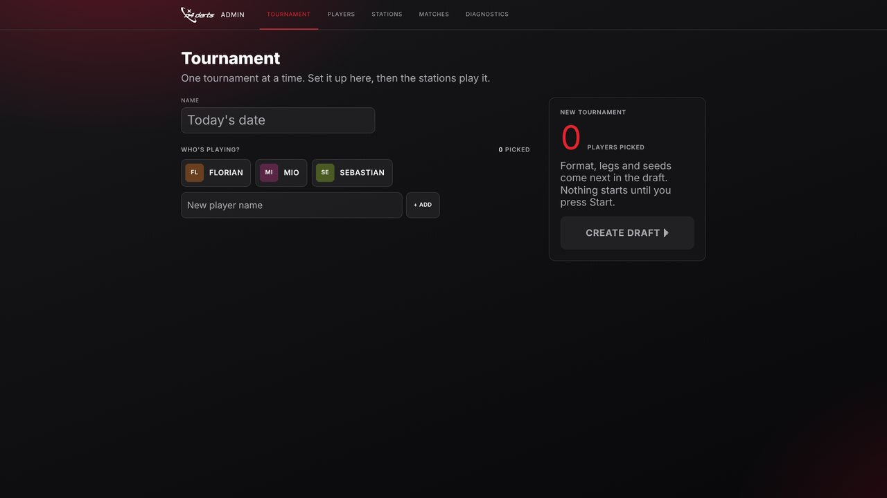
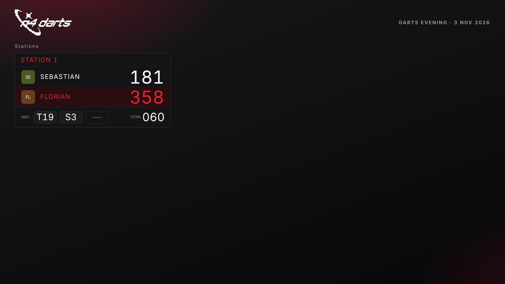
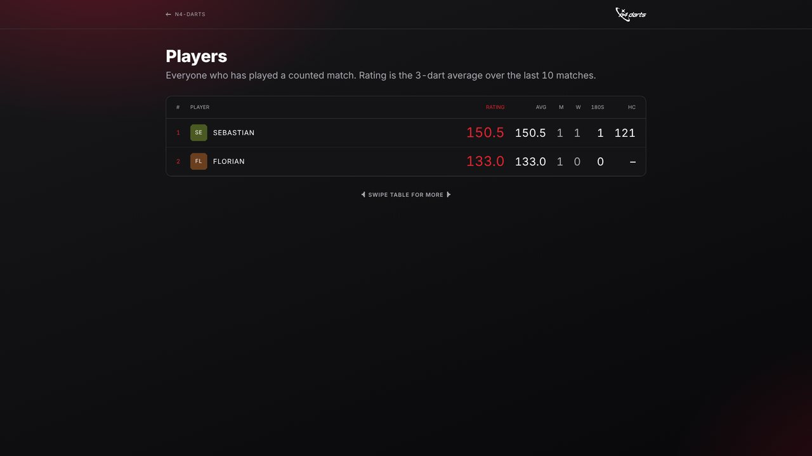

Autodarts erkennt die Pfeile – Offline Darts macht den Rest: X01, Cricket, Around the World und Elimination, allein oder mit bis zu 8 Spielern, Turniere, Beamer-Anzeige und Statistiken. Alles auf deinem eigenen Rechner im lokalen Netz. Stecker raus, weiterspielen.

Schriften, Icons, Skripte – alles wird mitgeliefert. Nichts lädt aus dem Netz, nichts muss in eine Cloud.
X01 mit 301, 501 oder 701 (In: Single, Double, Master, Bull · Out: Single, Double, Master), Cricket, Around the World und Elimination. Allein zum Trainieren oder mit 2–8 Spielern, First to 1–5 Legs.
Gruppenphase, dann K.-o. (einfach oder doppelt). Der Server setzt das nächste Match automatisch an deine Scheibe.
Live-Stände aller Stationen, Gruppentabellen, Turnierbaum und am Ende Sieger und Awards – füllt jeden Bildschirm.
Rangliste, 3-Dart-Schnitt, Checkout-Quote, 180er, bestes Leg – dazu je Spiel Siege, Darts und Cricket-MPR. Alles lokal, lesbar in data\spieler-stats.json.
Falschen Pfeil antippen, Finger auf die große Scheibe, aufs richtige Feld ziehen – eingetragen wird erst beim Loslassen. Daneben loslassen bricht ab. Fehlende Pfeile lassen sich nachtragen.
Jeder Pfeil erscheint nummeriert genau dort, wo Autodarts ihn gesehen hat. Bei Around the World leuchtet das nächste Ziel, bei Cricket die offenen Zahlen. Checkout-Wege stehen in den freien Wurf-Feldern.
Game shot mit Konfetti in Rot, Weiß und Gold, Pokal und den Zahlen des Siegers: Average, Darts, Checkout – auch auf dem Beamer.
Ein Ton pro Pfeil – Single, Double, Triple, Bull und Miss klingen verschieden –, ein Gong für den nächsten Spieler, Brummen beim Bust, Fanfare beim Sieg. Ein Knopf oben schaltet alles stumm.
Auf dem PC an der Scheibe läuft der Autodarts Board Manager 2.0.2 als reiner Pfeil-Detektor. Offline Darts läuft daneben auf demselben PC, holt sich jeden Wurf über dessen lokale Schnittstelle (Port 3180) ab und kümmert sich um alles andere. Ausgelegt für genau einen Dartautomaten.
Kein Login, keine Konten: Jede Station ist einfach eine Adresse. Wer im selben Netz ist, öffnet die Seite im Browser.
Normalerweise will der Board Manager beim ersten Start eine Anmeldung. Damit du dich nie einloggen musst und alles komplett offline läuft:
Aktualisieren: neue ZIP von „Neuester Stand“ entpacken und den Ordner data behalten (liegt der neue Ordner neben dem alten n4-darts, übernimmt der erste Start dessen Daten automatisch) – darin liegen Spieler, Spiele und Statistiken. GitHub baut die ZIP bei jeder Änderung automatisch neu.
Unter Linux: statt der ZIP offline-darts-linux.tar.gz laden, mit tar -xzf offline-darts-linux.tar.gz entpacken und im Ordner ./darts-starten.sh ausführen (Simulator: ./darts-simulator.sh). Fehlt Node.js, lädt das Skript es einmalig in den Ordner – ohne Root-Rechte. ./autostart.sh --kiosk startet Offline Darts und die Station im Vollbild bei jedem Einschalten.
Auf dem PC an der Scheibe ist die Seite http://localhost:3000/station/1 schon offen. Mit F11 auf Vollbild stellen. Oben zeigt eine Anzeige „Board online". Über das ⋮-Menü daneben startest oder stoppst du die Erkennung, kalibrierst und setzt das Board zurück – ohne den Kiosk zu verlassen.
Im Browser http://localhost:3000/admin öffnen (ggf. PIN eingeben) und unter Players Namen eintragen. Avatar antippen, um ein Foto mit der Kamera aufzunehmen und rund zuzuschneiden. Spieler lassen sich auch direkt an der Station hinzufügen.



Cricket und Around the World: Bei Cricket zeigt jede Spielerkarte die Marks auf 20 bis 15 und Bull, die offenen Zahlen leuchten auf der Scheibe. Bei Around the World leuchtet das nächste Ziel.


Alles läuft über http://localhost:3000/admin → Tournament, bequem vom Handy aus.
Spieler wählen, Create draft. Format, Legs pro Phase und Spiel einstellen. Setzliste nach Schnitt, geschätzte Dauer inklusive.
Ab jetzt führt der Server durch den Abend: nächstes Match direkt an die Scheibe, K.-o.-Baum nach der Gruppenphase, Sieger rücken auf.
Station pausieren, Match zurückhalten oder vorziehen, Spieler abmelden, Nachzügler aufnehmen, Würfe im Verlauf korrigieren.
Champion, Platzierungen und Awards: bester Match-Schnitt, höchstes Finish, meiste 180er, bestes Leg.



| Adresse | Gerät | Wofür |
|---|---|---|
| http://localhost:3000/station/1 | Touchmonitor an der Scheibe | Match starten, Punktestand, Pfeile korrigieren |
| http://localhost:3000/admin | Handy des Organisators | Turnier, Spieler, Verlauf, Board-Adresse |
| http://localhost:3000/display | Beamer | Live-Stände, Tabellen, Turnierbaum, Rangliste |
| http://localhost:3000/watch/1 | Beamer / TV | Eine Station groß, nur zum Zuschauen |
| http://localhost:3000/players | Handys der Spieler | Rangliste und persönliche Statistiken |
| http://localhost:3180/ | nur beim Simulator | Simulierte Scheibe zum Anklicken |
Ports: 3000 ist Offline Darts selbst, 3180 die Schnittstelle des Autodarts Board Managers (bzw. des Simulators). Von anderen Geräten im WLAN statt localhost die IP-Adresse des PCs an der Scheibe verwenden, z. B. http://192.168.178.50:3000/display.
Nichts. Erkennung und Offline Darts laufen komplett im lokalen Netz weiter.
Nein – bleib bei 2.0.2. Darauf sind der Offline-Betrieb ohne Login und die Schnittstelle (Port 3180) abgestimmt. Ein Update kann beides kaputt machen.
Alles liegt im Ordner data neben den Start-Dateien: die Datenbank, täglich ein Backup (die letzten 30 bleiben) und spieler-stats.json zum Nachlesen. Ab und zu den Ordner auf einen anderen Datenträger kopieren.
Besser nicht. Außer der Admin-PIN gibt es keinen Login – das gehört ins Heimnetz.
Jedes fertig gespielte Match – ob Turnier oder spontan. Kampflose Siege und abgebrochene Spiele nicht.
Darts Simulator.cmd (Linux: ./darts-simulator.sh) starten: Dann gibt es eine simulierte Scheibe zum Anklicken unter http://localhost:3180/.
Browser spielen Töne erst nach dem ersten Antippen der Seite – am Touchmonitor passiert das beim Einrichten ohnehin. Sonst prüfen, ob oben „Sound“ steht und nicht „Muted“.
Alle zählen von 0 hoch bis genau 301 (oder 501). Wer drüber wirft, hat einen Bust. Wer genau auf dem Stand eines Gegners landet, schickt ihn zurück auf 0.
Diese Version ist bewusst auf einen Dartautomaten eingestellt. Turniere laufen dann nacheinander an derselben Scheibe.